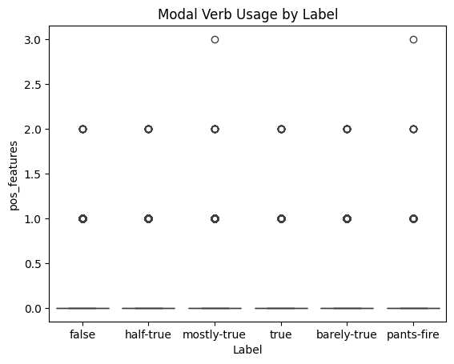
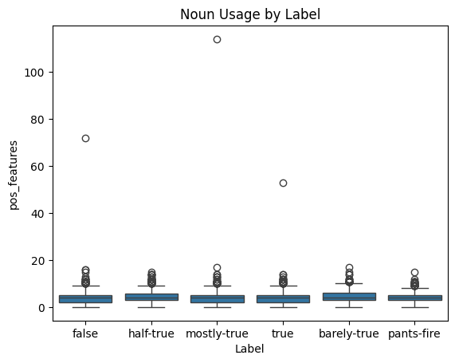
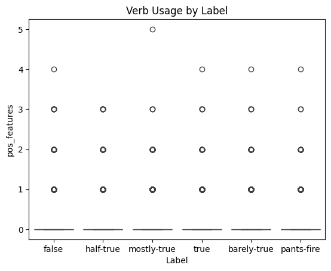
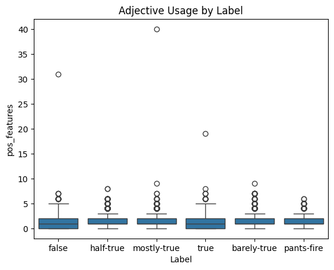
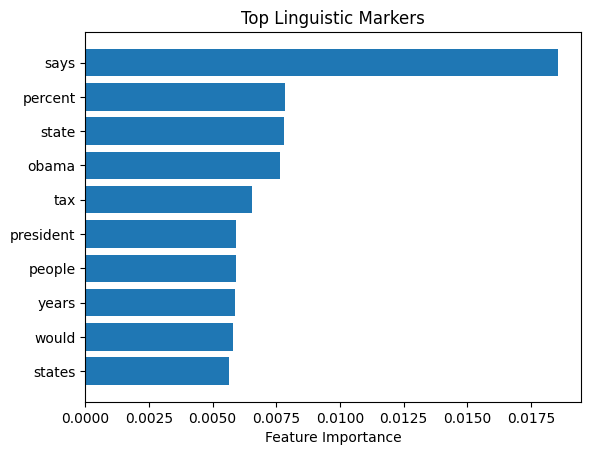
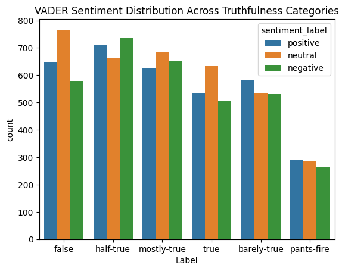
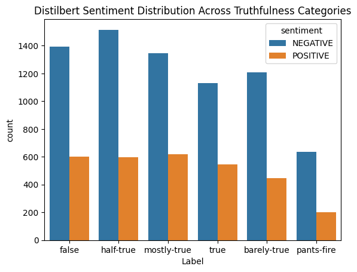

This notebook demonstrates a workflow for supervised learning, specifically focusing on detecting misinformation using linguistic features and sentiment analysis. The dataset used is the LIAR dataset, which contains labeled statements.
Load and Explore the Dataset
We start by loading the dataset and exploring its structure and contents.
import pandas as pd# Load the datasetliar_data = pd.read_csv('../../data/Clean_Data/liar_dataset/train.csv')# Explore the dataprint(liar_data.info())liar_data.head()
Text data is preprocessed to remove stopwords, punctuation, and to tokenize the text. This step is crucial for extracting meaningful features from the text.
import nltkfrom nltk.corpus import stopwordsfrom nltk.tokenize import word_tokenizeimport stringnltk.download('punkt')nltk.download('punkt_tab')# Preprocessing functiondef preprocess_text(text): tokens = word_tokenize(text.lower()) tokens = [t for t in tokens if t.isalnum()] tokens = [t for t in tokens if t notin stopwords.words('english') +list(string.punctuation)]return' '.join(tokens)# Apply preprocessingliar_data['cleaned_text'] = liar_data['Statement'].apply(preprocess_text)
[nltk_data] Downloading package punkt to /Users/pengli/nltk_data...
[nltk_data] Package punkt is already up-to-date!
[nltk_data] Downloading package punkt_tab to
[nltk_data] /Users/pengli/nltk_data...
[nltk_data] Package punkt_tab is already up-to-date!
Extract Linguistic Features
Linguistic features are extracted using TF-IDF for lexical features and POS tagging for syntactic features.
from sklearn.feature_extraction.text import CountVectorizer, TfidfVectorizernltk.download('averaged_perceptron_tagger_eng')# Extract lexical features using TF-IDFvectorizer = TfidfVectorizer(max_features=1000) # Adjust as neededX_lexical = vectorizer.fit_transform(liar_data['cleaned_text'])# Extract syntactic features using POS taggingdef pos_features(text): tokens = word_tokenize(text) pos_tags = nltk.pos_tag(tokens) pos_counts = nltk.FreqDist(tag for _, tag in pos_tags)return pos_countsliar_data['pos_features'] = liar_data['cleaned_text'].apply(pos_features)
[nltk_data] Downloading package averaged_perceptron_tagger_eng to
[nltk_data] /Users/pengli/nltk_data...
[nltk_data] Package averaged_perceptron_tagger_eng is already up-to-
[nltk_data] date!
import seaborn as snsimport matplotlib.pyplot as pltsns.boxplot(x='Label', y=liar_data['pos_features'].apply(lambda x: x['MD']), data=liar_data)plt.title('Modal Verb Usage by Label')plt.show()# Plot the distribution of noun usage by labelsns.boxplot(x='Label', y=liar_data['pos_features'].apply(lambda x: x.get('NN', 0)), data=liar_data)plt.title('Noun Usage by Label')plt.show()# Plot the distribution of verb usage by labelsns.boxplot(x='Label', y=liar_data['pos_features'].apply(lambda x: x.get('VB', 0)), data=liar_data)plt.title('Verb Usage by Label')plt.show()# Plot the distribution of adjective usage by labelsns.boxplot(x='Label', y=liar_data['pos_features'].apply(lambda x: x.get('JJ', 0)), data=liar_data)plt.title('Adjective Usage by Label')plt.show()




POS Tagging Results Interpretation
Part-of-Speech (POS) tagging is a process of marking up a word in a text (corpus) as corresponding to a particular part of speech, based on both its definition and its context. Here are some common POS tags and their meanings:
NN: Noun, singular or mass
NNS: Noun, plural
VB: Verb, base form
VBD: Verb, past tense
VBG: Verb, gerund or present participle
VBZ: Verb, 3rd person singular present
JJ: Adjective
RB: Adverb
IN: Preposition or subordinating conjunction
CD: Cardinal number
In the context of the liar_data DataFrame, the pos_features column contains the POS tagging results for each statement. For example:
{‘VBZ’: 2, ‘NNS’: 2, ‘JJ’: 2, ‘NN’: 2}: This indicates that the statement contains 2 verbs in the 3rd person singular present form, 2 plural nouns, 2 adjectives, and 2 singular nouns.
{‘NN’: 8, ‘VBD’: 2, ‘JJ’: 1, ‘VBN’: 1, ‘CD’: 1}: This indicates that the statement contains 8 singular nouns, 2 past tense verbs, 1 adjective, 1 past participle verb, and 1 cardinal number.
These features help in understanding the syntactic structure of the statements and can be used to extract meaningful patterns for detecting misinformation. Yet in this research, POS tagging analysis did not yield strong correlations with truthfulness categories, suggesting that syntactic features alone may not be reliable indicators of misinformation.
Correlate Features with Misinformation
We split the data into training and testing sets, train a RandomForestClassifier, and evaluate its performance.
from sklearn.model_selection import train_test_splitfrom sklearn.ensemble import RandomForestClassifierfrom sklearn.metrics import classification_report# Split dataX = X_lexical # Or combine with other feature setsy = liar_data['Label'] # Target variableX_train, X_test, y_train, y_test = train_test_split(X, y, test_size=0.3, random_state=42)# Train a classifierclf = RandomForestClassifier()clf.fit(X_train, y_train)# Evaluatey_pred = clf.predict(X_test)print(classification_report(y_test, y_pred))
Interpretation: While the model’s overall accuracy remains modest, its ability to differentiate between truthfulness categories provides valuable insights into linguistic markers of misinformation.
Analyze Results
Feature importance is analyzed to understand which linguistic markers are most indicative of misinformation.
import matplotlib.pyplot as pltimport numpy as np# Plot feature importancefeature_importance = clf.feature_importances_indices = np.argsort(feature_importance)[-10:] # Top 10 featuresplt.barh(range(len(indices)), feature_importance[indices])plt.yticks(range(len(indices)), [vectorizer.get_feature_names_out()[i] for i in indices])plt.xlabel('Feature Importance')plt.title('Top Linguistic Markers')plt.show()

Top Linguistic Markers
The top linguistic markers indicative of misinformation, specifically for the “pants-fire” and “false” labels, are identified through feature importance analysis. These markers are derived from the TF-IDF vectorization of the cleaned text data. The top features for both labels are as follows:
states
would
years
people
president
tax
obama
state
percent
says
These markers highlight common terms that frequently appear in statements labeled as “pants-fire” or “false.” Understanding these markers can help in identifying patterns and characteristics of misinformation in textual data.
Sentiment Analysis
Sentiment analysis is performed using two methods: - VADER sentiment analysis - Hugging Face Transformers
The results are visualized to understand the distribution of sentiment across different truthfulness categories.
Use prebuilt sentiment library VADER
from nltk.sentiment import SentimentIntensityAnalyzernltk.download('vader_lexicon')sia = SentimentIntensityAnalyzer()liar_data['sentiment_score'] = liar_data['cleaned_text'].apply(lambda x: sia.polarity_scores(x)['compound'])liar_data['sentiment_label'] = liar_data['sentiment_score'].apply(lambda x: 'positive'if x >0else ('negative'if x <0else'neutral'))
[nltk_data] Downloading package vader_lexicon to
[nltk_data] /Users/pengli/nltk_data...
[nltk_data] Package vader_lexicon is already up-to-date!
sns.countplot(data=liar_data, x='Label', hue='sentiment_label')plt.title('VADER Sentiment Distribution Across Truthfulness Categories')plt.show()

# Group by Label and sentiment_label and count occurrencessentiment_counts = liar_data.groupby(['Label', 'sentiment_label']).size().unstack(fill_value=0)# Calculate the ratio of positive to negative sentiment for each labelsentiment_counts['positive_to_negative_ratio'] = sentiment_counts['positive'] / sentiment_counts['negative']# Display the resultprint(sentiment_counts[['positive', 'negative', 'positive_to_negative_ratio']])# Plot the ratio of positive to negative sentiment for each labelsentiment_counts[['positive', 'negative']].plot(kind='bar', stacked=True)plt.title('VADER - Stacked Bar Plot of Positive and Negative Sentiment Counts by Label')plt.xlabel('Label')plt.ylabel('Count')plt.show()
from transformers import pipelinesentiment_pipeline = pipeline("sentiment-analysis")liar_data['sentiment'] = liar_data['cleaned_text'].apply(lambda x: sentiment_pipeline(x)[0]['label'])
/Users/pengli/Documents/GitHub/Project-5000-identify-misinformation/.env/lib/python3.12/site-packages/tqdm/auto.py:21: TqdmWarning: IProgress not found. Please update jupyter and ipywidgets. See https://ipywidgets.readthedocs.io/en/stable/user_install.html
from .autonotebook import tqdm as notebook_tqdm
No model was supplied, defaulted to distilbert/distilbert-base-uncased-finetuned-sst-2-english and revision 714eb0f (https://huggingface.co/distilbert/distilbert-base-uncased-finetuned-sst-2-english).
Using a pipeline without specifying a model name and revision in production is not recommended.
Device set to use cpu
sns.countplot(data=liar_data, x='Label', hue='sentiment')plt.title('Distilbert Sentiment Distribution Across Truthfulness Categories')plt.show()

# Group by Label and sentiment_label and count occurrencessentiment2_counts = liar_data.groupby(['Label', 'sentiment']).size().unstack(fill_value=0)# Calculate the ratio of POSITIVE to NEGATIVE sentiment for each labelsentiment2_counts['POSITIVE_to_NEGATIVE_ratio'] = sentiment2_counts['POSITIVE'] / sentiment2_counts['NEGATIVE']# Display the resultprint(sentiment2_counts[['POSITIVE', 'NEGATIVE', 'POSITIVE_to_NEGATIVE_ratio']])# Plot the ratio of POSITIVE to NEGATIVE sentiment for each labelsentiment2_counts[['POSITIVE', 'NEGATIVE']].plot(kind='bar', stacked=True)plt.title('Distilbert - Stacked Bar Plot of POSITIVE and NEGATIVE Sentiment Counts by Label')plt.xlabel('Label')plt.ylabel('Count')plt.show()